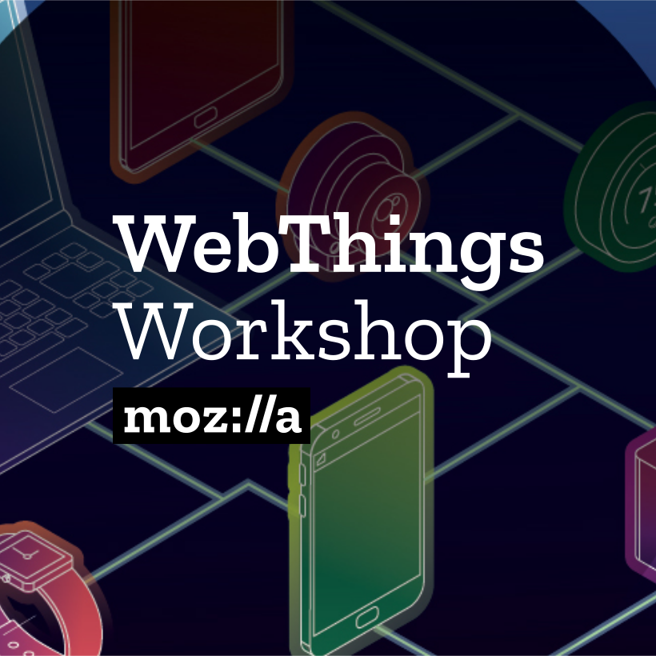
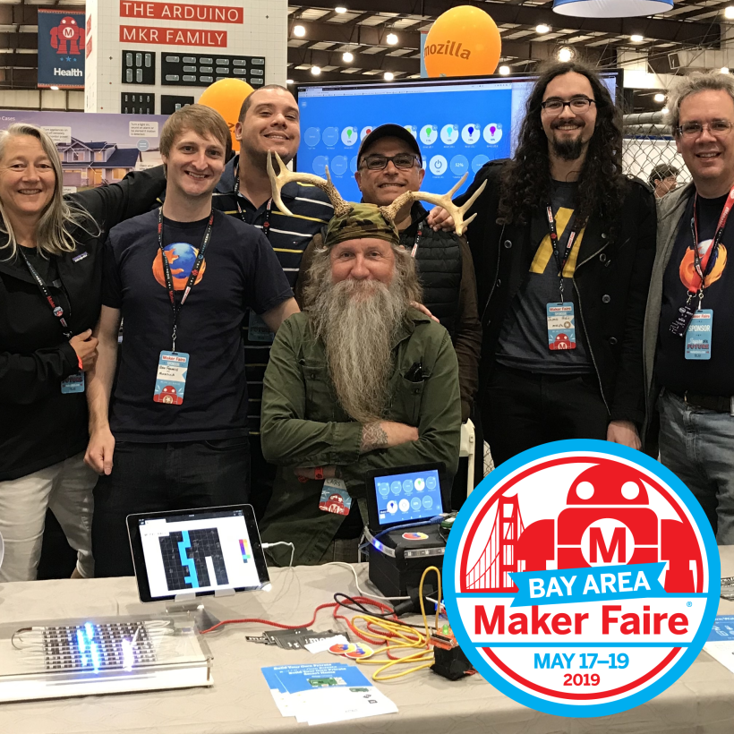

Get Involved
Build a Web Thing

Build your own IoT device which uses the Web Thing API
Create an Adapter

Create an adapter add-on to bridge an existing IoT device to the web
Hack on Mozilla WebThings

Help us develop our Web of Things implementation
All of our source code is on GitHub and you can find us in #iot on chat.mozilla.org or ask questions on Discourse.
Events

Mozilla San Francisco, April 11 2019
Mozilla WebThings Workshop
Learn about the WebThings Gateway and how to build your own web things with the WebThings Framework.
More info & tickets

San Mateo County Event Center, May 17-19 2019
Maker Faire Bay Area
Come and meet the Mozilla IoT team at the Mozilla WebThings stall at this three day maker extravaganza!
More info & tickets